A cultura brasileira, assim como a formação étnica do povo brasileiro, é vasta e diversa. Nossos hábitos culturais receberam elementos e influências de povos indígenas, africanos, portugueses, espanhóis, italianos e japoneses, entre outros, devido à colonização, à imigração e aos povos que já habitavam aqui.São elementos característicos da cultura brasileira a música popular, a literatura, a culinária, as festas tradicionais nacionais.
Literatura
A história da literatura brasileira tem início em 1500 com a chegada dos portugueses no Brasil. Isso porque as sociedades que aqui estavam eram ágrafas, ou seja, não possuíam uma representação escrita. Algumas das principais obras literárias brasileiras são:
O navio negreiro (Castro Alves)
Úrsula (Maria Firmina dos Reis)
A Moreninha (Joaquim Manuel de Macedo)
O cortiço (Aluísio Azevedo)
Quarto de despejo (Carolina Maria de Jesus)
Dom Casmurro (Machado de Assis)
Culinária
A culinária brasileira é rica, saborosa e diversificada. Cada um dos estados brasileiros tem seus pratos típicos, preparados de acordo com antigas tradições, que são transmitidas a cada geração.Alguns exemplos dessas comidas são:
Baião de dois
Brigadeiro
Canjica/Chá de burro
Bolo de tapioca
Cuscuz nordestino
Feijoada
Música e dança
A música e a dança brasileiras formam um dos universos culturais mais ricos do mundo, resultado da mistura de influências indígenas, africanas e europeias. Cada região do país possui ritmos e coreografias únicas que contam a história e celebram as tradições locais.
Região Norte: Destaca-se o Carimbó, uma dança de origem indígena marcada pelo som dos tambores, e o Boi-Bumbá (ou Bumba Meu Boi), celebrado em grandes festivais como o de Parintins.
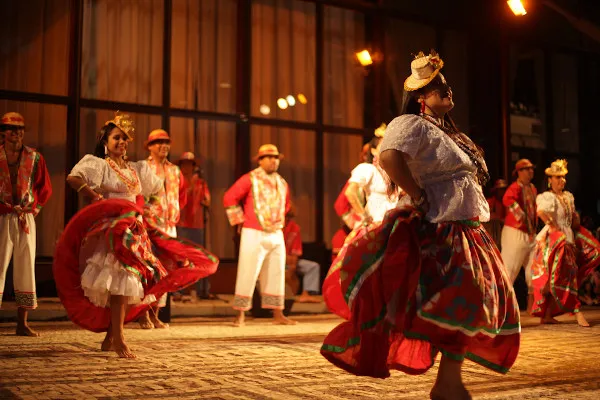
Região Nordeste: É o berço do Frevo em Pernambuco (com seus passos acrobáticos e sombrinhas), do Maracatu, e dos ritmos que embalam as Festas Juninas, como o Forró, o Baião e o Xaxado.
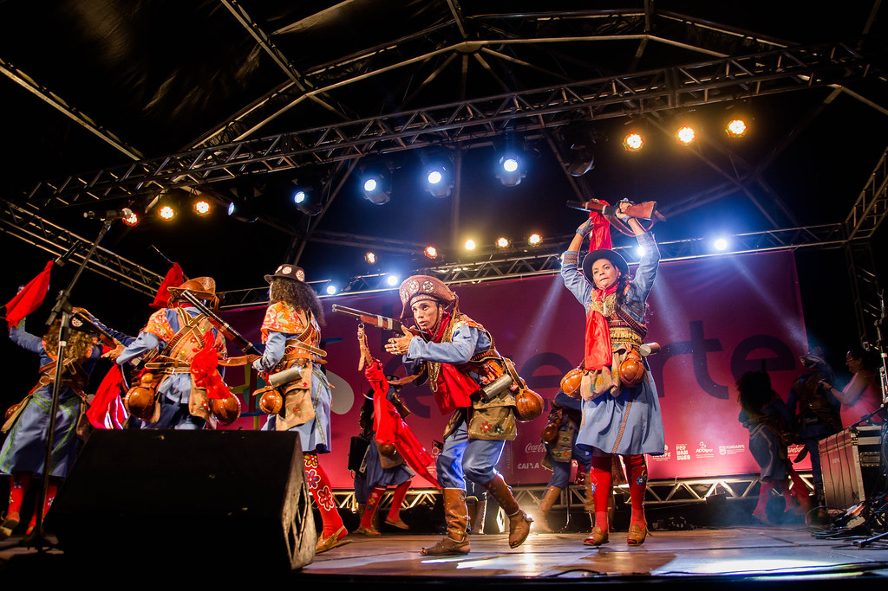
Região Sudeste: Famosa pelo Samba, que vai desde as rodas tradicionais de Samba de Roda e Samba de Gafieira até o ritmo acelerado do Carnaval. Inclui também o Jongo (dança afro-brasileira) e a Catira, ritmo do interior feito com a batida dos pés e das mãos ao som da viola.
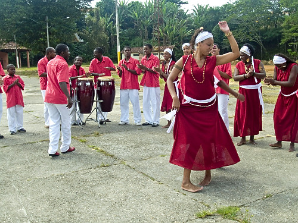
Região Sul: Fortemente influenciada pela cultura europeia, destaca-se o Fandango, o Chula (sapateado em disputa) e o Balaio.
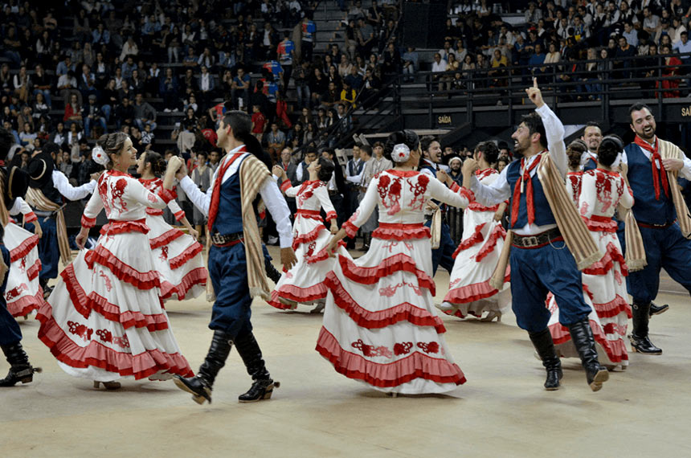
Essas manifestações não são apenas formas de entretenimento, mas também rituais que preservam tradições. Danças como o Toré (praticada por povos indígenas) e a Capoeira (que mistura arte marcial, esporte e dança) carregam uma forte herança de resistência histórica.
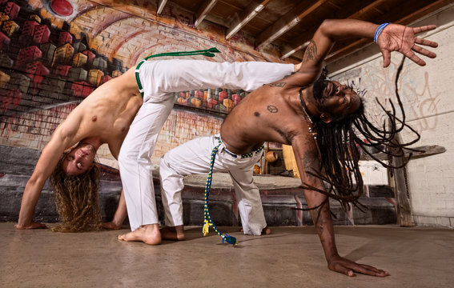
Festas Tradicionais e Celebrações
As festas brasileiras movem multidões e unem o sagrado, o profano, a ancestralidade e a alegria. Elas refletem o sincretismo religioso e a fusão de tradições europeias, africanas e indígenas. Algumas das principais celebrações do país são:
Carnaval do Rio de Janeiro e de São Paulo
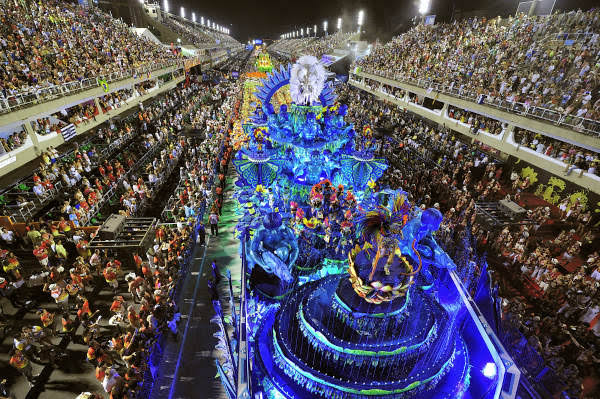
São João de Caruaru e de Campina Grande
Bumba Meu Boi de São Luís
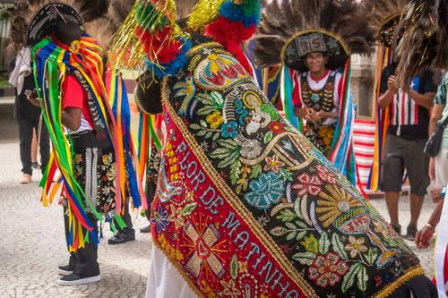
Festa da Uva
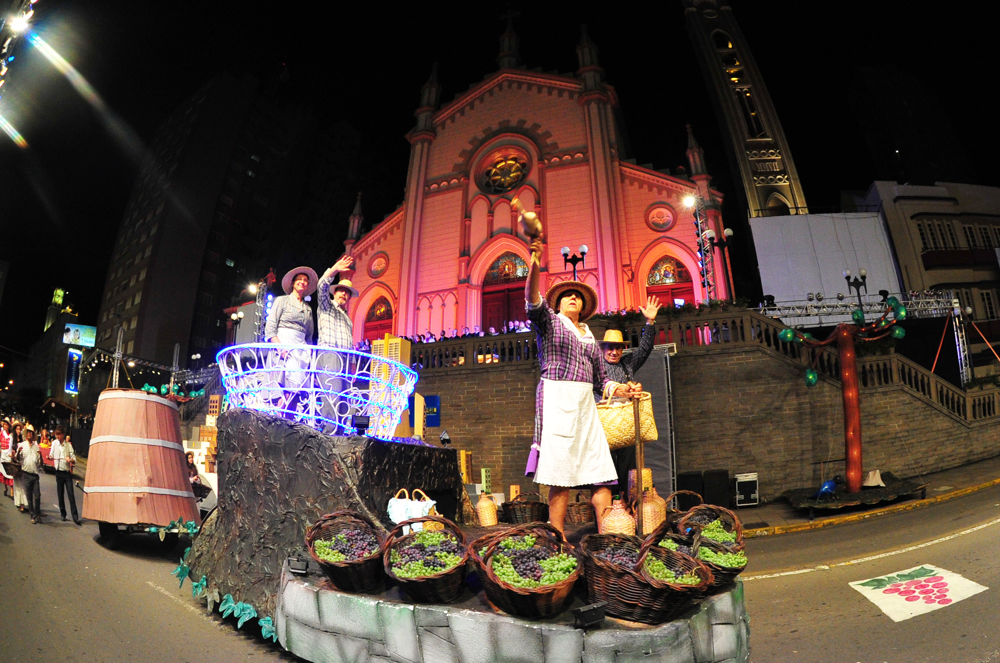
Lavagem do Bonfim
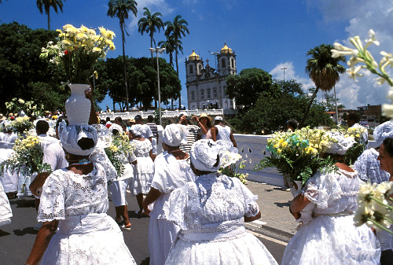
Artes Visuais e Artesanato
As artes visuais no Brasil transitam entre o erudito e o popular, expressando as cores, as lutas sociais e a fauna e flora do país. O artesanato é o sustento de muitas comunidades e preserva técnicas ancestrais. Alguns destaques são:
Abaporu (Tarsila do Amaral)
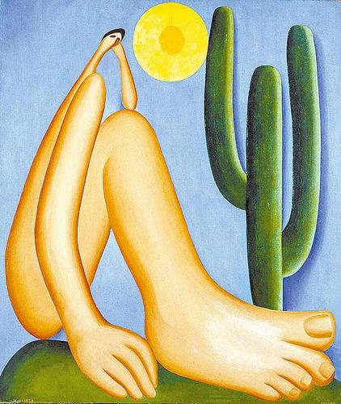
Os Retirantes (Candido Portinari)
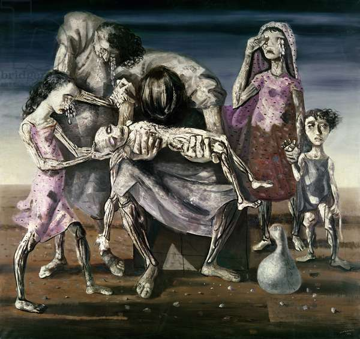
Folhetos de Cordel Ilustrados(Xilogravura nordestina)
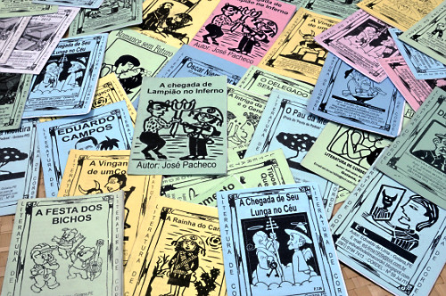
Monumento às Bandeiras (Victor Brecheret)
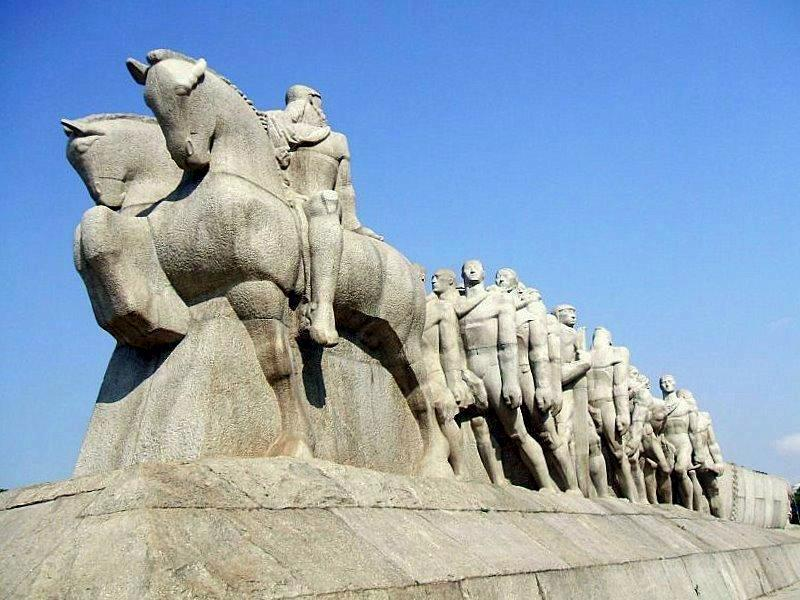
Bonecas de Barro do Vale do Jequitinhonha (Artesanato mineiro)